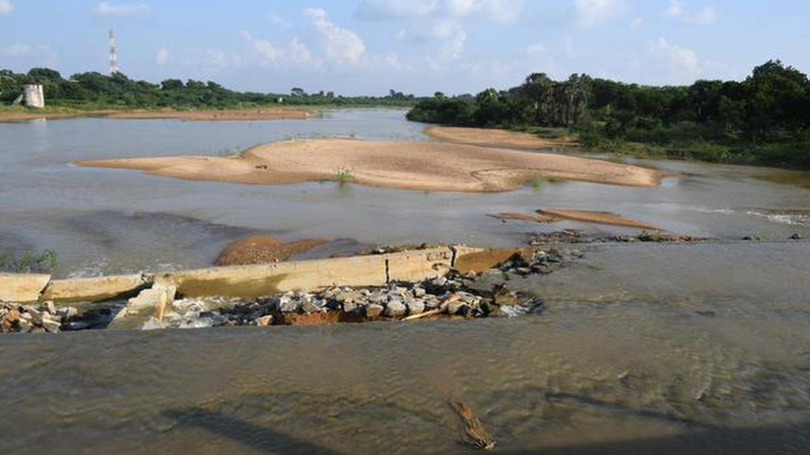

Here are the ways Kosasthalaiyar helps the region, especially places like Manali New Town:
Water Supply and Storage
The river feeds the Poondi reservoir, which is a major source of water for Chennai. Having the river flow means more fresh water storage.
Studies are underway to set up in-stream storage structures (reservoirs) along the river to better utilise surplus/flood water and conserve water for dry periods.
The Hindu
Flood Mitigation and Drainage
Proper river course, well-maintained bunds (banks), and clearing obstructions are key to allowing heavy rainfall or excess water release (e.g. from Poondi) to flow downstream without flooding inhabited areas.
Various flood control projects are being launched (strengthening banks, building flood walls, dredging, clearing riverbeds) to reduce risk in places like Manali New Town.
Groundwater Recharge / Ecosystem Support
When surplus/flood water is allowed to spread and seep in (floodplains, lakes & ponds connected to the river), it helps recharge groundwater. This is important in Chennai where water scarcity is a problem.
The river supports wetlands, estuaries, mangroves downstream (especially near Ennore Creek), which are important for biodiversity, fish, birds, and for buffering storms, providing ecological resilience.
Livelihoods and Communities
Many fishermen, farmers, and residents depend on the river’s ecosystem (fishing, agriculture, water for livestock, etc.).
The river also has cultural/religious significance: there is a shrine in the river area (Vellaiamman) whose idol was found floating in the river, and festivals related to it, indicating community ties with the river.
The New Indian Express
Challenges / What Needs to Improve
While the river brings many benefits, there are also issues that reduce its potential:
Pollution: Sewage, industrial effluents, fly-ash, etc., especially downstream.
Encroachments and reduced floodplain area: Human encroachments reduce the river’s capacity and the ability of floodwaters to flow unimpeded.
Bunds and flood barriers in some places are weak or in disrepair; during extreme monsoon or reservoir surplus water release, flooding in low-lying areas happens (e.g Manali New Town).
Lack of consistent management, planning for storage/reservoirs, pollution control etc. Projects are proposed, under study, delayed, etc.